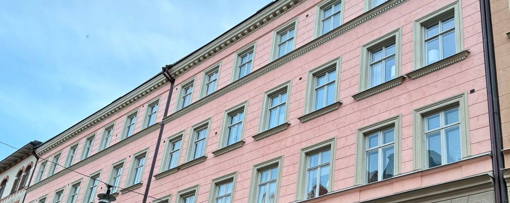

Välj språk
Välkommen till BRF Hvilan
Bostadsrättsföreningen Hvilan äger och förvaltar fastigheterna Vilan 16 och Vilan 17 på Roslagsgatan 35–37 i Vasastan, Stockholm. Föreningen registrerades 28 juli 1908.
Ny medlem? Välkommen i vår Facebookgrupp
Vi rekommenderar alla medlemmar att gå med i föreningens Facebookgrupp Brf Hvilan, där mycket av den informella kommunikationen sker. Viktig information från styrelsen lämnas alltid även via e-post och genom anslag i trapphusen, i enlighet med stadgarna.
Arbetsgrupper – vi sköter huset tillsammans
Vid årsstämman 2026 diskuterades vårt gemensamma ansvar för fastigheten. Styrelsen hinner inte vara vaktmästare vid sidan av styrelsearbetet, och för att hålla nere kostnaderna behöver vi medlemmar göra mer själva. Styrelsen har därför beslutat att alla medlemmar ska ingå i en av tre arbetsgrupper: Fastighetsgruppen, som ser till de gemensamma utrymmena och tar hand om mindre fel; Trädgårds- och utemiljögruppen, som sköter gården och ordnar städdagarna; och Återvinnings- och miljögruppen, som håller ordning i sopgången och arbetar med sortering och hållbarhet. Som ny medlem anmäler du ditt val till styrelsen via formuläret nedan, så ordnar styrelsen resten och gruppens kontaktperson lägger till dig i gruppens WhatsApp.
Fungerar inte knappen? Mejla i stället styrelsenhvilan@gmail.com och skriv vilken grupp du vill ingå i, ditt namn och ditt lägenhetsnummer.

Om föreningen
Huset på Roslagsgatan 35–37 i Vasastan byggdes 1897 och består av fyra huskroppar, gatuhus och gårdshus, kring en gemensam innergård. Här finns 57 lägenheter och 3 lokaler. BRF Hvilan är en äkta bostadsrättsförening som äger sin mark. Föreningen har genomfört flera större underhållsinsatser under senare år; se renoveringshistoriken på sidan För mäklare och årsredovisningen. Huset ritades av arkitekten Lars Bäckvall och är klassat av Stadsmuseet i den gula kategorin, vilket innebär att det bedöms ha positiv betydelse för stadsbilden och ett visst kulturhistoriskt värde.
Senaste nytt
-
Nytt internetabonnemang – varje hushåll beställer ny router
Föreningen byter inom kort internetabonnemang, och varje hushåll behöver då beställa en ny router via Mina sidor hos Telia. Läs mer
-
Höststädning söndagen den 8 november
Söndagen den 8 november klockan 11.00 samlas vi på innergården för föreningens höststädning och gör gården, cykelställen och de gemensamma utrymmena i ordning inför vintern. Föreningen bjuder på fika, och vi avslutar med gemensam grillning. Läs mer
-
Långtidsmätning av radon
Som en del av föreningens kontroll av inomhusmiljön och för att uppfylla myndigheternas mätkrav gjordes i våras en korttidsmätning av radon. Nu följer en långtidsmätning: styrelsen delar ut mätdosor i berörda lägenheter under november, och mätningen pågår i minst tre månader över vintern. Frågor besvaras av styrelsen via styrelsenhvilan@gmail.com. Läs mer